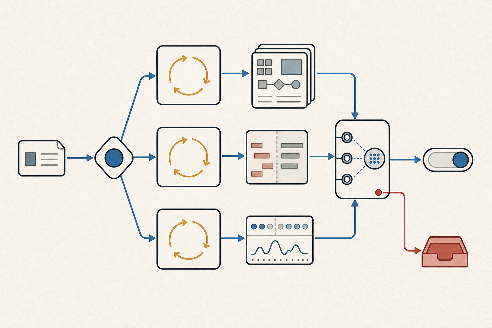
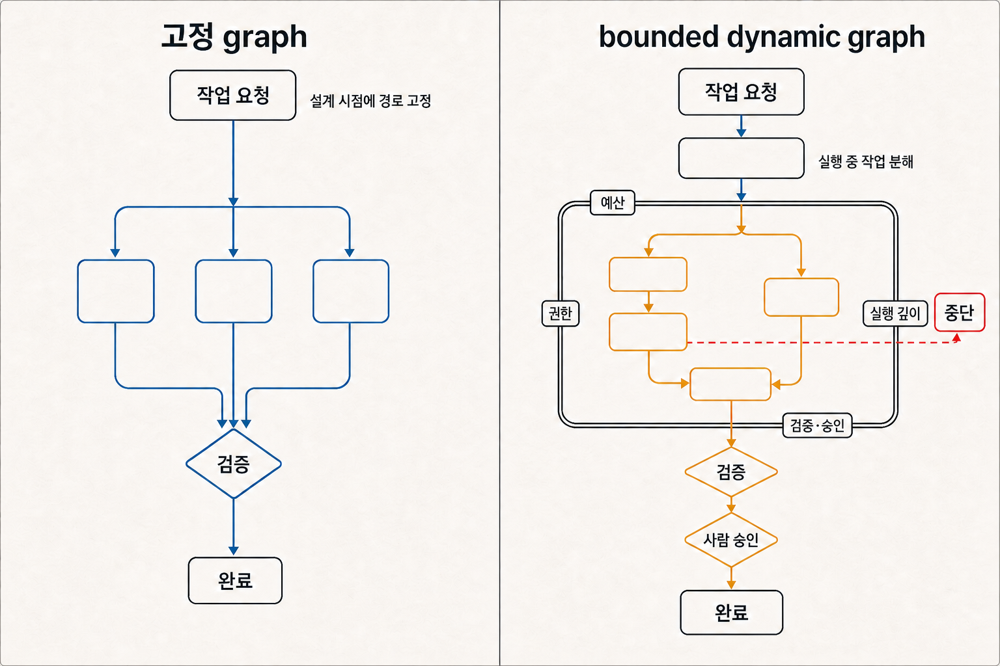

루프가 끝난 게 아니다: LangGraph의 State 관리에서 Graph Engineering으로
State를 잘 전달하는 것에서, 여러 실행 주체가 어떤 관계와 책임 아래 State를 바꾸는지 설계하는 것으로
LangGraph를 써본 개발자라면 이런 의문이 먼저 들 수 있어요. “예전에도 State가 있었고 Node와 Edge도 있었는데, 지금 말하는 Graph Engineering은 무엇이 새롭지?”
먼저 용어부터 조심해야 합니다. loop engineering과 graph engineering은 아직 업계가 합의한 표준 분야명이 아닙니다. 이 글에서 Graph Engineering은 새로운 프레임워크나 세대교체를 뜻하지 않아요. Agent 시스템의 설계 범위가 한 실행 루프에서 여러 worker와 artifact, 의존성, 검증과 승인 사이의 관계로 넓어지는 흐름을 설명하기 위한 표현입니다.
Loop는 여전히 Agent의 최소 실행 단위다
한 Agent가 도구를 사용해 열린 문제를 풀 때의 기본 동작은 크게 달라지지 않았습니다.
observe → decide → act → verify → repeat / stop도구 결과를 관찰하고, 다음 행동을 결정하고, 실행 결과를 검증한 뒤 다시 시도하거나 멈춥니다. Anthropic도 Agent를 환경의 피드백을 받으며 도구를 사용하는 루프로 설명합니다. 명확한 중단 조건과 외부의 실제 결과를 확인하는 과정은 지금도 중요해요.
문제는 한 루프가 못해서가 아니라, 작업 규모가 커졌을 때 생깁니다. 여러 worker가 서로 다른 자료를 조사하고, 일부 작업은 병렬로 진행하며, 한 결과가 다른 작업의 입력이 된다면 “다음 행동을 무엇으로 할까?”만으로는 충분하지 않습니다. 같은 파일을 누가 수정할지, 어떤 결과를 기준본으로 볼지, 충돌을 누가 해소할지, 검증을 통과한 결과만 어디에서 합류시킬지도 정해야 합니다.
Graph는 이때 여러 loop를 조율하는 상위 구조가 됩니다.
Loop = 각 Agent 안의 관찰·판단·행동·검증
Graph = 여러 loop·worker·tool·artifact·review gate를
state·dependency·branch·fan-out/fan-in으로 연결그러므로 graph는 loop의 반대말이 아닙니다. LangGraph 문서도 Node와 Edge를 조합해 State가 시간에 따라 변하는 복잡한 looping workflow를 만든다고 설명합니다.

그림 1. Loop는 graph에 의해 대체되지 않습니다. 각 worker 안에서 반복 단위로 남고, graph는 산출물의 합류와 검토·승인 경로를 조율합니다.LangGraph의 State 관리는 이미 중요한 기반이었다
LangGraph가 제공해 온 핵심 사고는 여전히 유효합니다.
State는 애플리케이션의 현재 snapshot입니다.Node는 State를 입력받아 계산이나 side effect를 수행하고 갱신된 State를 반환합니다.Edge는 현재 State에 따라 다음 Node를 정합니다. 고정 전이와 조건부 분기를 모두 표현할 수 있어요.Checkpoint는 실행 상태를 보존해 장애 이후 복구, 재개, human-in-the-loop 같은 흐름을 가능하게 합니다.
여기서 중심 질문은 무엇을 저장하고, 어떻게 병합하고, 어디서 복구할 것인가입니다. 메시지와 중간 결과, 현재 단계가 사라지지 않도록 만들고 reducer로 동시 갱신을 통제하는 일은 production Agent의 기초에 가깝습니다. Graph Engineering이라는 표현이 이를 낡은 접근으로 만들지는 않습니다.
달라지는 것은 State의 존재가 아니라 설계자가 보는 경계입니다.
State에서 topology와 ownership으로
작업을 실행 중에 분해하는 orchestrator를 떠올려보겠습니다. 입력을 받은 planner가 필요한 하위 작업을 찾고 worker를 배치합니다. 각 worker는 자기 loop 안에서 자료를 모으거나 코드를 수정하고, 결과는 reviewer에게 합류합니다. reviewer가 증거를 확인한 뒤에야 다음 단계나 사람의 승인으로 넘어갑니다.
이 구조에서 State schema만 정의해서는 답하기 어려운 질문이 생깁니다.
| 질문 | LangGraph state 관리 | 확장된 graph engineering |
|---|---|---|
| 무엇을 기억하는가 | 메시지·중간 결과·현재 단계·checkpoint | node별 input·artifact·evidence·approval state |
| 누가 바꾸는가 | 미리 정의된 node/reducer | runtime에 선택·생성된 worker + validator |
| 어디로 이동하는가 | fixed/conditional edge | task 발견에 따라 worker·dependency 일부 구성 |
| 충돌 통제 | state schema·reducer | 파일·branch·permission·artifact ownership까지 |
| 완료 판정 | terminal node/stop condition | terminal state + verification receipt + human approval |
핵심은 topology ownership입니다. 누가 task를 분해할 수 있는지, 생성된 worker가 어느 artifact를 소유하는지, 어떤 evidence가 다음 Node의 authoritative input이 되는지, 외부 발행이나 배포 전에 어느 approval edge를 거치는지를 함께 설계합니다.
예를 들어 여러 Agent가 참여하는 소프트웨어 변경 작업은 다음처럼 볼 수 있어요.
변경 요청
→ orchestrator: 목표·영향 범위·완료 조건 정의
├─ analysis worker: 관련 코드와 의존성 조사
├─ implementation worker: 변경안 작성
└─ test worker: 회귀 테스트와 실패 원인 확인
→ reviewer: 산출물·테스트 결과·충돌 검증
→ 사람: merge 또는 배포 승인여기서 worker가 “완료했다”고 말한 것만으로는 끝나지 않습니다. 변경된 코드, 테스트 결과, 검토 기록처럼 다음 Node가 확인할 수 있는 receipt가 필요합니다. Edge는 단순한 메시지 전달선이 아니라 증거의 전이 계약에 가까워져요.
고정 graph보다 동적 graph가 항상 나은 것은 아니다
고정 graph에서는 설계 시점에 Node와 Edge가 대부분 정해집니다. 경로를 예상하고 테스트하거나 감사하기 쉽습니다. 반면 동적 workflow에서는 실행 중 발견한 task에 따라 worker 수와 일부 dependency, fan-out 경로가 달라질 수 있어요. 미리 하위 작업을 알기 어려운 조사나 코딩 문제에 유연하지만, 비용과 권한, 재현성과 합류 검증은 더 어려워집니다.
그래서 실무에서 비교적 안전한 형태는 fixed outer harness + bounded dynamic inner topology라고 생각합니다.
Fixed outer harness
goal → plan → bounded fan-out → reviewer fan-in → approval → finish
Dynamic inner topology
planner가 task packet·worker 수·검색 경로 일부를 runtime에 결정안쪽에는 작업 분해의 유연성을 주되, 바깥에서는 최대 worker 수와 실행 깊이, 시간·비용 예산, 쓰기 권한, 중단 조건, verifier와 사람의 승인을 고정하는 방식입니다. 모델이 topology 일부를 정하더라도 최종 통제까지 넘기지는 않습니다.

그림 2. 고정 graph는 작업 경로 전체를 미리 정합니다. Bounded dynamic graph는 통제 레일 안에서 작업 분해만 바꾸고, 검증과 사람 승인으로 이어지는 완료 경로는 고정합니다.모든 orchestration이 graph DSL로 수렴하지 않는다
Graph는 유용한 사고 도구지만 유일한 구현 표면은 아닙니다. Google ADK는 반복과 분기가 복잡해지면 static graph가 오히려 다루기 어려울 수 있다며, while, 조건문, 재귀, async/await를 쓰는 code-based dynamic workflow를 별도 선택지로 둡니다. AutoGen은 group chat, handoff, reflection 같은 message protocol에서 multi-agent pattern을 구성합니다.
더 단순한 기준선도 놓치면 안 됩니다. 같은 질문을 여러 번 독립 실행한 뒤 선택하거나 투표하는 parallel sampling만으로도 결과가 달라질 수 있어요. 복잡한 topology가 좋아 보였더라도 개선이 graph 구조 때문인지, 단순히 더 많은 token과 시도를 사용했기 때문인지는 분리해서 봐야 합니다. 서로 다른 연구 benchmark의 결과를 장기 production 우월성으로 일반화해서도 안 됩니다.
결국 선택 기준은 “얼마나 복잡한 graph를 그릴 수 있는가”가 아닙니다. 짧은 조회나 한 파일 수정은 단일 loop면 충분하고, 순서가 고정돼 있으면 chain이나 DAG가 낫습니다. checkpoint와 조건 분기가 중요할 때 graph가 힘을 발휘하고, 하위 작업을 미리 알 수 없을 때 제한된 동적 구성을 검토하면 됩니다.
가장 작은 충분한 topology를 선택해야 합니다.
루프만 설계해서는 부족해졌다
LangGraph의 State + Nodes + Edges + Checkpoint를 버릴 이유는 없습니다. 오히려 그 사고를 runtime task decomposition, multi-agent ownership, artifact lineage, verification까지 확장하는 것이 지금 논의의 핵심입니다.
이 관점은 앞서 정리한 루프 엔지니어링의 다음 단계이기도 합니다. 개별 Agent가 안전하게 반복하도록 만드는 것에서, 여러 반복 단위가 서로의 산출물과 경계를 침범하지 않고 함께 움직이도록 만드는 것으로 설계 범위가 넓어집니다.
“루프의 시대가 끝났다”는 말은 변화의 방향을 지나치게 단순화합니다. 더 정확한 표현은 이렇습니다. 루프는 각 Agent 안에서 계속 돌고 있지만, 이제는 여러 루프가 어떤 State와 책임, 증거와 승인 아래 함께 움직이는지도 설계해야 합니다.
독자가 가져갈 한 문장
Graph Engineering은 loop를 대체하는 새 유행어가 아니라, State 관리 위에 여러 loop의 topology·ownership·evidence·approval을 설계하는 관점을 더하는 일입니다.